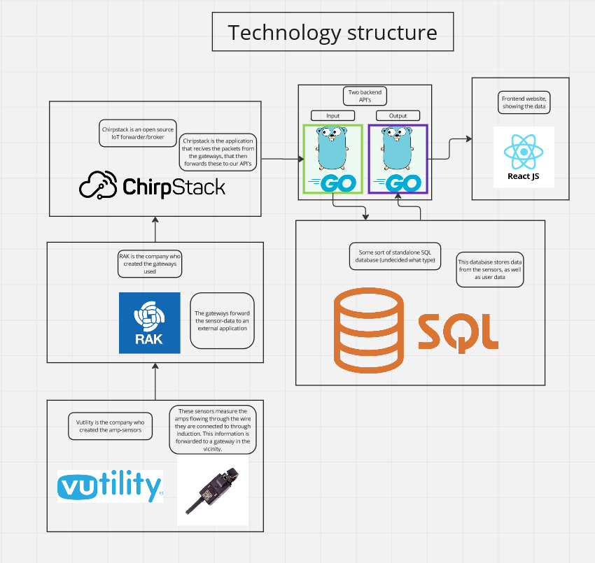

Bachelor project
The task we were provided with was to create a full-stack web application. It should consist of a frontend, backend and a database.
The application should provide a user with the data collected by sensors placed on electrical consumers in a simple and intuitive way (we chose a timeseries graph).
The choice of technologies regarding development was fully up to us, but the electrical sensors and gateways was already chosen to be the Vutility HotDrop and the WisGate Edge Lite 2.
The Technologies
The project makes use of a wide scope of technologies and an overview of everything used can be seen in the image below.
The project itself
As this was a group task, we divided the task up into three parts, as we were a group of three people. These were: Frontend (Design), Backend (API's and database) and LoRaWAN server (connection and data collection).
We wrote the frontend using React with Typescript and Vite (deployed using nginx). The backend uses Go to write the API, and MariaDB to host the database. Chirpstack is used as the LoRaWAN network server.

Above you can see what the main page looked like while under development.
The graph uses "chartJS", and the data is stored on a database controlled by two REST-API's written in Go.
The input API, as the name suggests, takes input data either from the frontend, or from the sensors measuring electrical data.
The REST-API is split up into two parts, the Input API, and the Output API. The input API handles all requests to write to the database, and the output API handles all read requests.
This solution is dockerized into containers. Frontend using nginx's base image, backend using Go's base image and the LoRaWAN network server using its own containers.